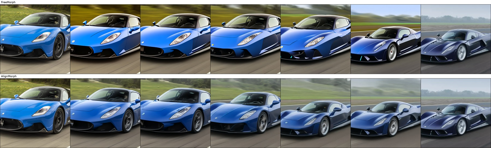
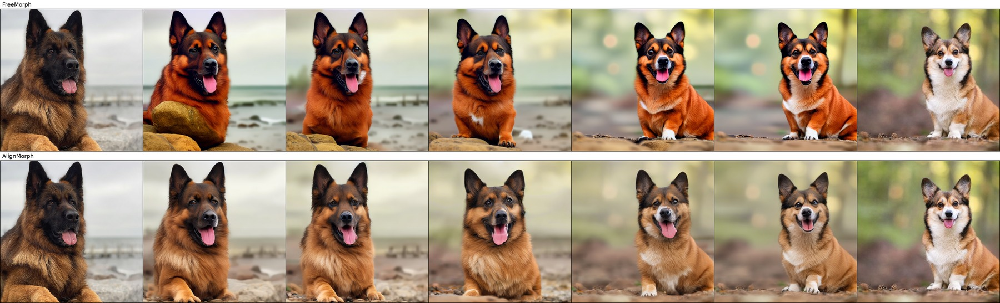
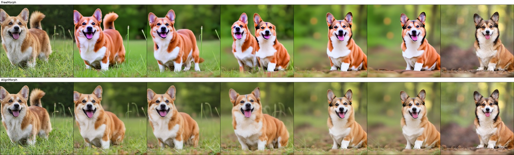

car_01

Semantically corresponding cars, motorcycles, and dogs with large spatial displacements and differences in pose or layout.
All 21 input pairs: pair index · full manifest.
FreeMorph (top) and AlignMorph (bottom). Three examples, seven frames per sequence.


